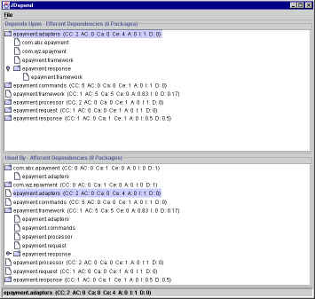
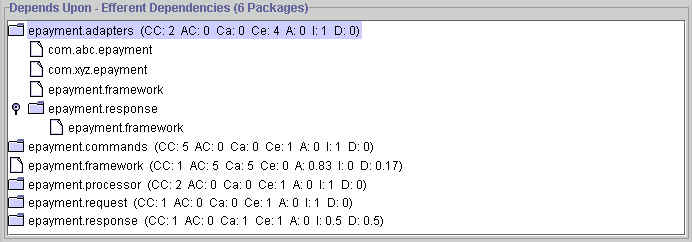
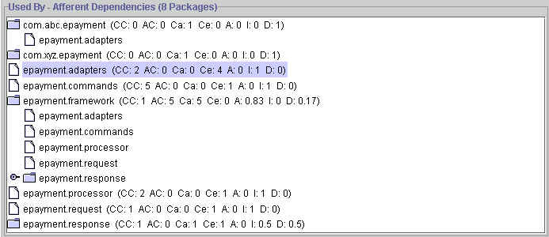

Summary
JDepend traverses Java class file directories and generates design quality metrics for each Java package. JDepend allows you to automatically measure the quality of a design in terms of its extensibility, reusability, and maintainability to manage package dependencies effectively.
If you like this kind of automation, you'll love my book, Pragmatic Project Automation.
JDepend traverses Java class file directories and generates design quality metrics for each Java package, including:
The number of concrete and abstract classes (and interfaces) in the package is an indicator of the extensibility of the package.
The number of other packages that depend upon classes within the package is an indicator of the package's responsibility.
The number of other packages that the classes in the package depend upon is an indicator of the package's independence.
The ratio of the number of abstract classes (and interfaces) in the analyzed package to the total number of classes in the analyzed package.
The range for this metric is 0 to 1, with A=0 indicating a completely concrete package and A=1 indicating a completely abstract package.
The ratio of efferent coupling (Ce) to total coupling (Ce + Ca) such that I = Ce / (Ce + Ca). This metric is an indicator of the package's resilience to change.
The range for this metric is 0 to 1, with I=0 indicating a completely stable package and I=1 indicating a completely instable package.
The perpendicular distance of a package from the idealized line A + I = 1. This metric is an indicator of the package's balance between abstractness and stability.
A package squarely on the main sequence is optimally balanced with respect to its abstractness and stability. Ideal packages are either completely abstract and stable (x=0, y=1) or completely concrete and instable (x=1, y=0).
The range for this metric is 0 to 1, with D=0 indicating a package that is coincident with the main sequence and D=1 indicating a package that is as far from the main sequence as possible.
Package dependency cycles are reported along with the hierarchical paths of packages participating in package dependency cycles.
Before using JDepend, it is important to understand that "good" design quality metrics are not necessarily indicative of good designs. Likewise, "bad" design quality metrics are not necessarily indicative of bad designs. The design quality metrics produced by JDepend should not be used as yard sticks by which all designs are measured.
The design quality metrics produced by JDepend are intended to be used by designers to measure the designs they create, understand those designs, and automatically check that the designs exhibit expected qualities while undergoing continuous refactoring. Refactoring will undoubtedly lead to some adjustment of these metrics as the shape of the design changes.
Measure Design Quality
The quality of a design can be measured in part by quantifying its degrees of extensibility, reusability, and maintainability. These qualities are all influenced by the inter-package dependencies of the design. Designs are more extensible when they are independent of implementation details, allowing them to adapt to new implementations without internal modification or breaking their existing contracts. This same independence tends to increase the reuse potential of portions of the design. Independent portions of the design containing high-level abstractions can be extracted from portions containing implementation details.
The maintainability of a design is improved when changes can easily be made without propagating to other parts of the system. JDepend allows you to automatically measure the quality of a design in terms of its extensibility, reusability, and maintainability to effectively manage and control package dependencies.
Invert Dependencies
The goal of using JDepend is to ultimately invert package dependencies such that low-abstraction packages depend upon high-abstraction packages. This inversion of dependencies allows the high-abstraction packages to be reused independently while being extensible to an open set of implementations. In general, dependencies upon stable packages are desirable, while dependencies upon instable packages are undesirable. JDepend allows dependencies to be iteratively examined and refactored as an integral part of software design and development.
Foster Parallel, Extreme Programming
Packages that are stable should be the centerpieces of a loosely coupled application so the speed of the development team is not adversely affected by the propagation of software changes. Stable packages form design-by-contract facades to other subsystems, allowing teams to develop in parallel at an extreme pace. Moreover, by measuring the software design quality, the overall impact of proposed software changes can be accurately estimated. JDepend allows teams to identify and use desirable dependencies in the system and avoid those dependencies that cause changes to ripple throughout the system.
Isolate Third-Party Package Dependencies
Third-party package dependencies can be easily identified and isolated by examining the afferent couplings to those packages. Once the dependency on these third-party packages has been measured with JDepend, the dependency can be managed by effectively designing abstract and stable packages that encapsulate the third-party package implementation details.
Package Release Modules
Packages that are cohesive and independent can be released as autonomous modules with their own release schedules and version numbers. Single packages, or groups of related packages collaborating in a framework, that are candidates for independent release can be harvested by evaluating their design quality metrics using JDepend.
Identify Package Dependency Cycles
Packages participating in a package dependency cycle are in a deadly embrace with respect to reusability and their release cycle. Package dependency cycles can be easily identified by reviewing the textual reports of dependency cycles. Once these dependency cycles have been identified with JDepend, they can be broken by employing various object-oriented techniques.
JDepend 2.9 is the latest major version release. It includes all the minor version changes.
The distribution contains a JAR file, source code, sample application, API documentation, and this document.
Windows
To install JDepend, follow these steps:
Unzip the jdepend-<version>.zip distribution
file to a directory referred to as %JDEPEND_HOME%.
Add JDepend to the classpath:
set CLASSPATH=%CLASSPATH%;%JDEPEND_HOME%\lib\jdepend-<version>.jar
Unix (bash)
To install JDepend, follow these steps:
Unzip the jdepend-<version>.zip distribution
file to a directory referred to as $JDEPEND_HOME.
Change file permissions:
chmod -R a+x $JDEPEND_HOME
export CLASSPATH=$CLASSPATH:$JDEPEND_HOME/lib/jdepend-<version>.jar
The JDepend distribution includes the pre-built classes in the
$JDEPEND_HOME/lib/jdepend-<version>.jar file.
Building
An Ant
build file is included in $JDEPEND_HOME/build.xml to
build the $JDEPEND_HOME/dist/jdepend-<version>.jar
file from the included source code.
To build JDepend, use:
cd $JDEPEND_HOME ant jar
Testing
The JDepend distribution includes JUnit test cases to validate the integrity of JDepend.
To test JDepend, use:
cd $JDEPEND_HOME ant test
JDepend provides a graphical, textual, and XML user interface to visualize Java package metrics, dependencies, and cycles.
Graphical UI
The graphical user interface displays a hierarchical tree for both the afferent and efferent couplings of each analyzed Java package.
To run JDepend with the graphical user interface, use the following syntax:
java jdepend.swingui.JDepend [-components <components>] <directory> [directory2 [directory 3] ...]
For example, to analyze all the Java class files in the
$JDEPEND_HOME/build directory, use:
java jdepend.swingui.JDepend $JDEPEND_HOME/build
Textual UI
The textual user interface displays detailed metrics, dependencies, and cycles for each analyzed Java package. For the convenience of importing these metrics into other applications, the summary section contains comma-separated metrics for each Java package. Alternatively, the XML user interface can be used for easier integration with other tools.
To run JDepend with the textual user interface, use the following syntax:
java jdepend.textui.JDepend [-components <components>] [-file <output file>] <directory> [directory2 [directory 3] ...]
For example, to analyze all the Java class files in the
$JDEPEND_HOME/build directory, use:
java jdepend.textui.JDepend $JDEPEND_HOME/build
Alternatively, the text report can be written to file using:
java jdepend.textui.JDepend -file report.txt $JDEPEND_HOME/build
Example output from the
textual UI shows the analysis of the sample application, an example
electronic payment framework. The relevant source for the sample
application is distributed in
$JDEPEND_HOME/sample.
XML UI
The XML user interface displays detailed metrics, dependencies, and cycles for each analyzed Java package in an XML format for easier integration with other tools.
To run JDepend with the XML user interface, use the following syntax:
java jdepend.xmlui.JDepend [-components <components>] [-file <output file>] <directory> [directory2 [directory 3] ...]
For example, to analyze all the Java class files in the
$JDEPEND_HOME/build directory, use:
java jdepend.xmlui.JDepend $JDEPEND_HOME/build
Alternatively, the XML report can be written to file using:
java jdepend.xmlui.JDepend -file report.xml $JDEPEND_HOME/build
Example output from the
XML UI shows the analysis of the sample application, an example
electronic payment framework. The relevant source for the sample
application is distributed in
$JDEPEND_HOME/sample.
You can then transform the XML format into a format of your liking.
For example, David Bock contributed an XSL stylesheet that transforms
the JDepend XML output into a Graphviz dot file format. David's stylesheet is
distributed with JDepend in the contrib/jdepend2dot.xsl
file.
To create a sample Graphviz file, use:
ant jdepend-to-graphviz
This will create a docs/jdepend-report.dot file. If
you have Graphviz installed, you can then convert that .dot file
into a .png file using:
dot -Tpng -o jdepend.png jdepend.dot
The graphical user interface displays the afferent and efferent couplings of each analyzed Java package, presented in the familiar Java Swing tree structure.
Figure 1 shows the analysis of the sample application, an example
electronic payment framework. The relevant source for the sample
application is distributed in $JDEPEND_HOME/sample.

Figure 1 (Click to view full-scale)
The root of each tree displays a branch for each analyzed Java package, annotated with the following metrics:
For organizational purposes, package metrics are only displayed at the root of each tree. For convenience, selecting any node of the tree displays the currently selected package's metrics in the status bar.
Efferent Couplings
The top tree displays the efferent couplings of each analyzed Java package. Branches of the tree can be opened up to explore packages that the currently selected package depends upon (Figure 2).

Figure 2 (Click to view full-scale)
For the epayment.adapters package, we see that it depends
upon 4 other packages:
the com.abc.epayment, com.xyz.epayment,
epayment.framework, and the epayment.response
packages. Furthermore, it's completely concrete (A=0) and completely
instable (I=1). This balance earns it a spot squarely on the main
sequence (D=0). We can conclude from these metrics that dependencies on
this package are undesirable because it's both dependent and irresponsible.
It's sensitive to modifications made to any of it's efferent couplings and
not accountable to any other package. Therefore, it's important that other
packages in the system not become dependent on this package, as they'll in turn
become fragile by any modifications made to the details of the
epayment.adapters package and its dependencies. As a concrete
package, it's not capable of being extended without being modified.
For the epayment.framework package, we see that it does
not depend on any other packages in the application (Ce=0). However,
it is responsible to every other package (Ca=5) while exhibiting a
high degree of abstractness (A=0.83) and stability (I=0). While not
completely balanced, this package is very near the main sequence
(D=0.17). We can conclude from these metrics that dependencies on
this package are desirable because it's both independent and
responsible. It's abstractness also indicates that it's capable of
being extended to accommodate new implementations without being
modified.
Packages that were imported, but not analyzed, are not shown in the efferent dependency tree. Third-party software packages that weren't analyzed, for example, will not be shown in the efferent tree, as their efferent dependencies are not available.
Afferent Couplings
The bottom tree displays the afferent couplings of each analyzed Java package. Branches of the tree can be opened up to explore packages that use the currently selected package (Figure 3).

Figure 3 (Click to view full-scale)
For the epayment.adapters package, we see that it is not
used by any other package in the application. This confirms our
observations of the efferent dependency tree.
For the epayment.framework package, we see that it's used
by all the other user-defined packages in the framework. However, it
does not have any efferent couplings (Ce=0) and exhibits a high degree
of abstractness (A=0.83) and stability (I=0). This is a requirement
of a software framework - we want it to be heavily used, thereby
making it very responsible to its clients, yet be highly abstract to
allow extensibility without modification.
For the com.abc.epayment package, a third-party software
package, we see that it's used by the epayment.adapters
package. There are no metrics displayed for this package however, as
it's a third-party package that was not analyzed by JDepend. It was
imported by a user-defined package (epayment.adapters),
so it is shown in the afferent dependency tree.
Using the afferent dependency tree, it's easy to identify which user-defined packages are dependent upon third-party software packages.
Package dependency cycles are best observed using the textual or XML user interface. In general, all packages dependencies that intersect a dependency cycle are reported. This includes packages directly participating in a cycle and packages that depend on packages directly participating in a cycle.
The intent is to identify sets of packages that must be reused and released together. To break reported cycles, focus on those packages directly participating in a cycle.
Here's an example of a two-package cycle, as reported by the textual UI:
com.xyz.ejb
|
| com.xyz.servlet
|-> com.xyz.ejb
This indicates that the com.xyz.ejb package depends on
the
com.xyz.servlet package, which in turn depends on the
com.xyz.ejb package. These two package must be released and
reused together.
Here's an example of a package that depends on the two-package cycle described above, as reported by the textual UI:
com.xyz.client
|
|-> com.xyz.ejb
| com.xyz.servlet
|-> com.xyz.ejb
This indicates that the com.xyz.client package depends on
the com.xyz.ejb package, which in turn forms a cyclic
dependency with the com.xyz.servlet package.
The com.xyz.client package itself isn't part of the
cycle, but since it depends on a package in the cycle, it can't be
reused/released without it.
JDepend can be customized by using command-line options and/or by
creating a jdepend.properties file in the user's home
directory or any directory in the classpath.
Components
JDepend can calculate metrics and dependencies for components: packages that contain one or more sub-packages.
For example, given the following package hierarchy:
com.xyz.package_a.subpackage_a com.xyz.package_a.subpackage_b com.xyz.package_a.subpackage_c com.xyz.package_b.subpackage_a com.xyz.package_b.subpackage_b
Assume you want to collect metrics and dependencies for the
com.xyz.package_a and com.xyz.package_b
packages, but not for any of their contained packages. For example,
if there is a dependency from com.xyz.package_a.subpackage_a
to com.xyz.package_b.subpackage_b, then you want it
to be reported as a dependency from com.xyz.package_a
to com.xyz.package_b.subpackage_b.
To do that, use the -components command-line argument:
java jdepend.textui.JDepend -components com.xyx.package_a,com.xyz.package_b /path/to/classes
Note that if component packages are named using the
-components option, then no other packages
are reported.
Package Filters
JDepend will ignore all package names specified as values to the
ignore property name prefix in the
jdepend.properties file. By default, no packages are filtered.
The following example jdepend.properties file will ignore
all package names prefixed by java, javax,
sun, com.sun, and the package
com.xyz.tests:
ignore.java=java.*,javax.* ignore.sun=sun.*,com.sun.* ignore.tests=com.xyz.tests
Packages can also be filtered programmatically by creating a
PackageFilter instance defining the filters and
then passing it to the JDepend constructor.
The following example will ignore all package names prefixed by
java and javax, in addition to any
package filters specified in an existing
jdepend.properties file:
PackageFilter filter = new PackageFilter();
filter.addPackage("java.*");
filter.addPackage("javax.*");
JDepend jdepend = new JDepend(filter);
The following example will ignore only the package names prefixed
by java and javax, regardless of any package
filters specified in an existing
jdepend.properties file:
Collection filters = new ArrayList();
filters.add("java.*");
filters.add("javax.*");
PackageFilter filter = new PackageFilter(filters);
JDepend jdepend = new JDepend(filter);
Volatility
Packages that are not expected to change can be specifically
configured with a volatility (V) value in the
jdepend.properties file.
V can either be 0 or 1. If V=0, meaning the package is not at
all subject to change, then the package will automatically fall
directly on the main sequence (D=0). If V=1, meaning that the
package is subject to change, then the distance from the main
sequence is not affected. By default, all packages are
configured with V=1.
For example, a package like java.lang is generally not
volatile. That is, for all practical purposes this package is
maximally stable. Creating dependencies on it is not cause for
concern. Thus, if you include this package in analysis, it's best to
set its V=0.
The following example jdepend.properties file will set
the java.lang package's volatility to 0:
java.lang=0
Volatility can also be programmatically set on individual packages
prior to analysis by creating a package instance, setting its
volatility, then registering it with the
JDepend instance before analysis.
The following example sets V=0 for the java.lang package:
JavaPackage javaLang = new JavaPackage("java.lang");
javaLang.setVolatility(0);
// or
JavaPackage javaLang = new JavaPackage("java.lang", 0);
JDepend jdepend = new JDepend();
jdepend.addDirectory("/path/to/classes");
jdepend.addPackage(javaLang);
jdepend.analyze();
Wildcards are not supported for configuring sets of packages with a volatility value.
Inner Classes
By default, inner classes are analyzed.
The following example jdepend.properties file will
disable analyzing inner classes:
analyzeInnerClasses=false
In the spirit of automation, metrics can be automatically collected by JDepend so that they never go stale or require visual inspection. As the software evolves through refactorings, the design quality test cases can be run as a sanity check to ensure that the design has not formed too many undesirable dependencies.
Tolerances for any collected metrics (e.g., the distance from the main sequence (D)) can be codified in a JUnit test case that automatically checks the metrics for conformance to a desired result and provides immediate visual feedback. Tests can also be written to fail if any package dependency other than those declared in a dependency constraint are detected. The existence of package dependency cycles can also be automatically checked by a JUnit test.
Dependency Constraint Tests
The following example JUnit test case tests whether a package dependency constraint is met. This test fails if any package dependency other than those declared in the dependency constraint are detected:
import java.io.*;
import java.util.*;
import junit.framework.*;
public class ConstraintTest extends TestCase {
private JDepend jdepend;
public ConstraintTest(String name) {
super(name);
}
protected void setUp() throws IOException {
jdepend = new JDepend();
jdepend.addDirectory("/path/to/project/util/classes");
jdepend.addDirectory("/path/to/project/ejb/classes");
jdepend.addDirectory("/path/to/project/web/classes");
}
/**
* Tests that the package dependency constraint
* is met for the analyzed packages.
*/
public void testMatch() {
DependencyConstraint constraint = new DependencyConstraint();
JavaPackage ejb = constraint.addPackage("com.xyz.ejb");
JavaPackage web = constraint.addPackage("com.xyz.web");
JavaPackage util = constraint.addPackage("com.xyz.util");
ejb.dependsUpon(util);
web.dependsUpon(util);
jdepend.analyze();
assertEquals("Dependency mismatch",
true, jdepend.dependencyMatch(constraint));
}
public static void main(String[] args) {
junit.textui.TestRunner.run(ConstraintTest.class);
}
}
Dependency Cycle Tests
The following example JUnit test case tests for the existence of package dependency cycles:
import java.io.*;
import java.util.*;
import junit.framework.*;
public class CycleTest extends TestCase {
private JDepend jdepend;
public CycleTest(String name) {
super(name);
}
protected void setUp() throws IOException {
jdepend = new JDepend();
jdepend.addDirectory("/path/to/project/ejb/classes");
jdepend.addDirectory("/path/to/project/web/classes");
jdepend.addDirectory("/path/to/project/thirdpartyjars");
}
/**
* Tests that a single package does not contain
* any package dependency cycles.
*/
public void testOnePackage() {
jdepend.analyze();
JavaPackage p = jdepend.getPackage("com.xyz.ejb");
assertEquals("Cycle exists: " + p.getName(),
false, p.containsCycle());
}
/**
* Tests that a package dependency cycle does not
* exist for any of the analyzed packages.
*/
public void testAllPackages() {
Collection packages = jdepend.analyze();
assertEquals("Cycles exist",
false, jdepend.containsCycles());
}
public static void main(String[] args) {
junit.textui.TestRunner.run(CycleTest.class);
}
}
Main Sequence Distance Tests
The following example JUnit test case tests the conformance of packages to a distance from the main sequence (D) within project-defined tolerances:
import java.io.*;
import java.util.*;
import junit.framework.*;
public class DistanceTest extends TestCase {
private JDepend jdepend;
public DistanceTest(String name) {
super(name);
}
protected void setUp() throws IOException {
jdepend = new JDepend();
jdepend.addDirectory("/path/to/project/ejb/classes");
jdepend.addDirectory("/path/to/project/web/classes");
jdepend.addDirectory("/path/to/project/thirdpartyjars");
}
/**
* Tests the conformance of a single package to a
* distance from the main sequence (D) within a
* tolerance.
*/
public void testOnePackage() {
double ideal = 0.0;
double tolerance = 0.125; // project-dependent
jdepend.analyze();
JavaPackage p = jdepend.getPackage("com.xyz.ejb");
assertEquals("Distance exceeded: " + p.getName(),
ideal, p.distance(), tolerance);
}
/**
* Tests the conformance of all analyzed packages to a
* distance from the main sequence (D) within a tolerance.
*/
public void testAllPackages() {
double ideal = 0.0;
double tolerance = 0.5; // project-dependent
Collection packages = jdepend.analyze();
Iterator iter = packages.iterator();
while (iter.hasNext()) {
JavaPackage p = (JavaPackage)iter.next();
assertEquals("Distance exceeded: " + p.getName(),
ideal, p.distance(), tolerance);
}
}
public static void main(String[] args) {
junit.textui.TestRunner.run(DistanceTest.class);
}
}
Writing JUnit tests to detect unwanted dependencies and package cycles can be awkward. Bob Martin contributed the Module Dependencies FitNesse fixture that allows you to represent your package dependencies as a table. The fixture uses the JDepend API to ensure that only the dependencies declared in the table actually exist in your software.
For example, the following table describes a system with three
components: ejb,
web, and util. The ejb
and web components depend upon the util
component.
| Module Dependencies | |||
| ejb | web | util | |
| ejb | X | ||
| web | X | ||
| util | |||
When this table is executed as a FitNesse fixture, and if the ejb
and web components actually did depend upon
the util component, then the cells containing an X would
be colored green. Any other unexpected component dependencies, such
as the ejb component depending on the web
component, would result in the corresponding cell turning red.
Cycles result in all corresponding cells within the cycle to turn red and be marked with the word 'cycle'. The fixture sports other handy features, as well. Refer to Bob's blog for detailed usage information.
The Module Dependencies fixture is distributed with
JDepend in the contrib/fitnesse directory.
Ant includes a task for automatically running JDepend.
Java class file directories to analyze are defined by the nested
<classespath> element.
Text Reports
The following example Ant task runs JDepend on the build
directory and writes the text report to
the docs/jdepend-report.txt file:
<target name="jdepend">
<jdepend outputfile="docs/jdepend-report.txt">
<exclude name="java.*"/>
<exclude name="javax.*"/>
<classespath>
<pathelement location="build" />
</classespath>
<classpath location="build" />
</jdepend>
</target>
XML Reports
Ant 1.5 and above includes a format attribute for the
JDepend Ant task and a default XSL stylesheet to transform a JDepend
XML report into an HTML report.
The following example Ant task runs JDepend on the build
directory, writes the XML report to
the docs/jdepend-report.xml file, and generates
the jdepend.html file using the jdepend.xsl
stylesheet distributed with Ant 1.5 (and above) in
the etc directory:
<target name="jdepend">
<jdepend format="xml" outputfile="docs/jdepend-report.xml">
<exclude name="java.*"/>
<exclude name="javax.*"/>
<classespath>
<pathelement location="classes" />
</classespath>
<classpath location="classes" />
</jdepend>
<style basedir="docs" destdir="docs"
includes="jdepend-report.xml"
style="${ant.home}/etc/jdepend.xsl" />
</target>
JDepend has the following known limitations:
Cyclic dependency detection may not report all cycles reachable from a given package. The detection algorithm stops once any given cycle is detected. If the same cycle is reachable from another package, the cycle may be reported more than once. In general, you want to aggressively remove any cycles.
JDepend does not collect source code complexity metrics. If you are interested in collecting these types of metrics, the JavaNCSS tool referenced in the Resources section is recommended.
The design quality metrics generated by JDepend are imperfect. They are intended to be used to pragmatically and responsibly measure design quality in a relative sense, rather than as a yard stick for all designs.
Java interfaces are treated as equals with Java abstract classes. In other words, although there are practical design advantages to using interfaces in concert with abstract classes, JDepend treats them uniformly in the calculation of abstractness. Likewise, abstract classes that implement interfaces are counted as abstract classes, in addition to their interface, regardless of whether they are always referenced outside the package as their interface type.
JDepend does not currently support the calculation of Ca and Ce in terms of the number of classes inside a package that have afferent or efferent couplings to classes inside other packages. Rather, JDepend calculates Ca and Ce strictly in terms of the number of packages with which a package has afferent or efferent couplings, based on the collective analysis of all imported packages. This deviates slightly from the original Ca and Ce definitions proposed by Robert Martin.
If you have any questions, comments, enhancement requests, success stories, or bug reports regarding JDepend, or if you want to be notified when new versions of JDepend are available, please email mike@clarkware.com. Your information will be kept private.
A mailing list is also available to discuss JDepend or to be notified when new versions of JDepend are available.
Please support the ongoing development of JDepend by purchasing a copy of the book Pragmatic Project Automation.
Thanks in advance!
Move forward with confidence by getting a timely and valuable second opinion on your design and/or code. You get an in-depth evaluation that includes a presentation of the key recommendations and a full written report of observations and detailed recommendations.
Contact me for more details.
JDepend is licensed under the BSD License.
Many thanks to Robert Martin for originally describing these design quality metrics and writing the C++ dependency analyzer from which JDepend was adapted. I am especially grateful that he allowed me to stand on his shoulders in adapting his work for the Java community.
"Agile Software Development: Principles, Patterns, and Practices", by Martin, R. (Prentice Hall, 2002)
"Designing Object-Oriented C++ Applications Using The Booch Method", by Martin, R. (Prentice Hall, 1995)
"Object Oriented Design Quality Metrics: An Analysis of Dependencies", by Martin, R.
JavaNCSS - Clemens Lahme's JavaNCSS measures Non-Commenting Source Statements (NCSS), the Cyclomatic Complexity Number (McCabe metric), and other quantitative source-level metrics.